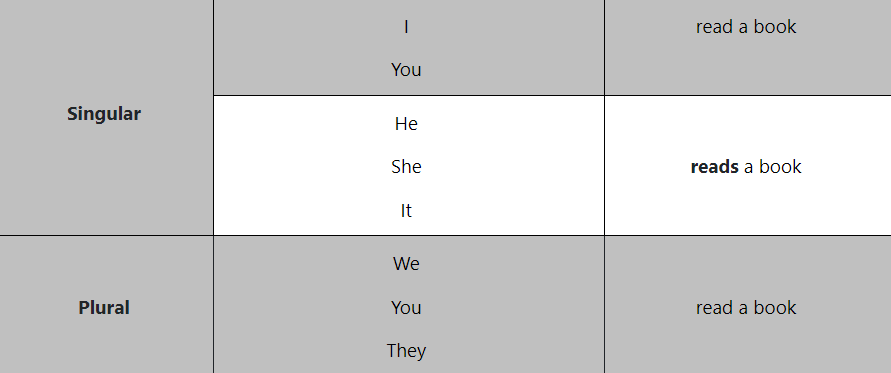
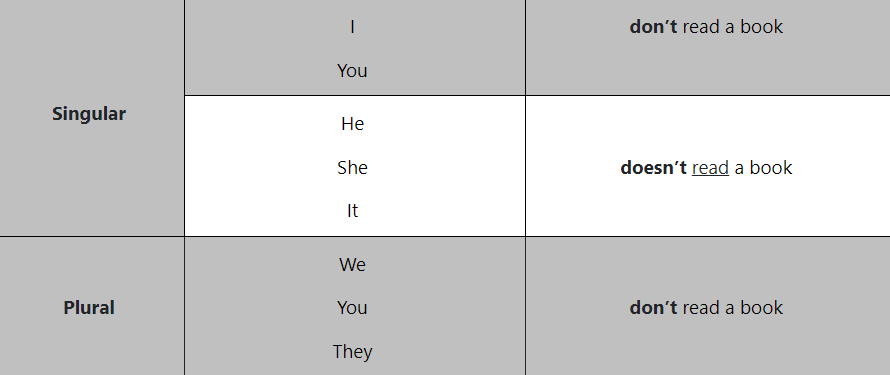
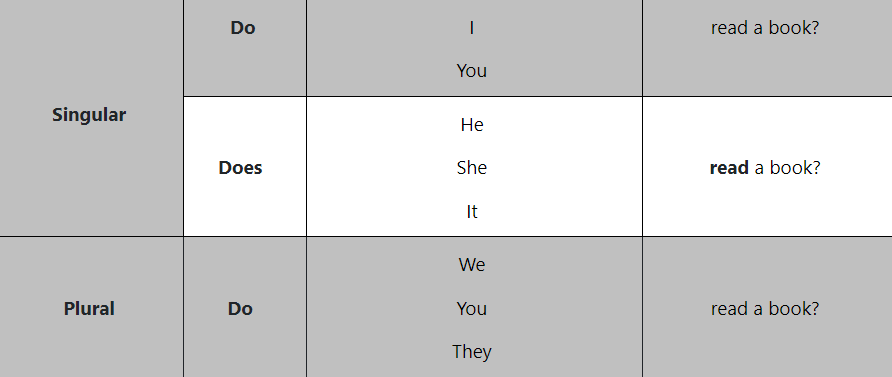

Simple Present
O Simple Present é o tempo verbal utilizado no dia a dia, correspondendo ao presente do indicativo em português. Em inglês, a conjugação dos verbos diferencia-se da língua materna, usando a forma base do verbo em frases afirmativas e o verbo auxiliar "do" em frases negativas e interrogativas. Essa estrutura não envolve conjugação para todas as pessoas, ao contrário do português.
Quando usar o Simple Present?
O Simple Present é utilizado em contextos do cotidiano para descrever verdades, fatos, características físicas ou estados emocionais, contar histórias, quantificar a frequência de ações e descrever rotinas e hábitos. Seu uso é abrangente e engloba diversas situações do dia a dia.
Observe os seguintes exemplos:
- Peter has breakfast at work. Peter toma café no trabalho. (hábito, rotina)
- The Earth turns around the sun. A terra gira em torno do sol. (fato, verdade)
- My parents aren’t very tall. Meus pais não são muito altos. (aspecto físico)
- She seems happy today. Ela parece feliz hoje. (estado emocional)
Regras do Simple Present
×1 - Conjugação na terceira pessoa do singular (he, she, it)
O verbo só será conjugado na terceira pessoa do singular. Isso mesmo! Diferentemente do português, flexionamos o verbo apenas para he, she, it
2 - Há apenas dois verbos irregulares
O verbo to be (ser/estar) e o verbo to have (ter) são irregulares no presente simples:
To be = ser, estar
- I AM
- you, we, they, ARE
- He, she, it IS
To have = ter
- I, you, we, they HAVE
- He, she, it HAS
3 - Verbo auxiliar do/does
O verbo auxiliar do/does é utilizado para indicar um aspecto da oração. No presente simples, ele é utilizado apenas em frases negativas e interrogativas.
- She doesn’t live here. Ela não mora aqui.
- Does she live here? Ela mora aqui?
4 - Regras ortográficas
As regras ortográficas aplicam-se exclusivamente à terceira pessoa do singular (he, she, it). Para as outras pessoas, o verbo não se flexiona.
Na maioria dos verbos, acrescenta-se –s (dance, live, talk, feel, get, take, throw):
- She likes. Ela gosta.
Em verbos terminados em –ss, –sh, –ch, –o, –x, acrescenta-se –es (miss, pass, watch, finish, do):
- He washes. Ele lava.
Em verbos terminados em consoante + y, retira-se o –y e, depois, acrescenta-se –ies:
- He studies. Ele estuda.
Em verbos terminados em vogal + y, acrescenta-se –s:
- She plays. Ela joga.
Formas do Simple Present
×Forma Afirmativa
Os verbos conjugados no presente simples em frases afirmativas não usam o auxiliar do. Basta colocar o verbo na forma-base e sem a partícula to. Lembre-se de que o verbo flexiona-se com he, she, it.
Forma negativa
Na língua inglesa, o verbo auxiliar do presente simples do indica que uma frase pode ser tanto negativa quanto interrogativa. Dessa forma, ao fazer uma negação, é necessário que o verbo principal seja precedido por do + not ou does + not. Nesse caso, para a terceira pessoa do singular, o does já está flexionado, logo, o verbo principal permanece na sua forma-base e sem a partícula to. Além disso, pode-se usar a forma contraída do auxiliar: don’t ou doesn’t, sobretudo em textos mais informais.
Forma interrogativa
Em perguntas, também utilizamos o auxiliar do. A estrutura de uma pergunta na língua inglesa difere-se de nossa língua materna, porque o verbo (auxiliar) vem no começo da frase, além da pontuação (?)
Exemplo Prático
×What is Vale do Silício?
Vale do Silício, akin to Silicon Valley, denotes a region nestled in the Southern area. The term emerged in Year due to its connection with technology and innovation. This valley is renowned for hosting a myriad of technology firms that have chosen it as their headquarters.
Key Takeaways
- Vale do Silício stands as a global epicenter of technological innovation situated in the southern region.
- It earned its name from its association with technology and innovation.
- Home to numerous major technology, software, and internet companies, including List Key Companies.
- Noteworthy for its status as one of the wealthiest regions globally and a thriving real estate market.
Understanding Vale do Silício
The term Vale do Silício was initially coined in Year by Journalist's Name, covering the history of technology and innovation. Over time, it expanded to encompass various technological facets, particularly in the realm of big tech.
Encompassing an area of 1,850 square miles, Vale do Silício houses around three million people, covering specified counties and regions. Its largest city is City, and it hosts esteemed institutions like Stanford University, fostering a robust research and development synergy throughout the valley.
The region has been a breeding ground for high-profile ventures, attracting substantial venture capital. As of December 2020, the area witnessed Number venture capital-backed initial public offerings valued at approximately $253 billion.
Special Considerations
In Year, the median household income in Vale do Silício exceeded that of San Francisco, California, and the United States. As of 2021, households in Vale do Silício earned an average of $138,804 per year, surpassing incomes in San Francisco and California.
Forbes reported Number tech billionaires globally with a combined net worth of $1.9 trillion, with the top Number in this sector amassing over $660 billion combined. In 2022, Vale do Silício was reportedly home to Number billionaires.
However, some business leaders have opted to relocate their ventures away from Vale do Silício, citing reasons such as the overall political climate and more lenient COVID-19 restrictions elsewhere.
A Brief Timeline of Key Silicon Valley Developments
1939: William Hewlett and David Packard patent an audio oscillator, forming the foundation for the Hewlett-Packard company.
1940s: William Shockley, John Bardeen, and Walter H. Brattain invent the first working transistor at Bell Labs.
1951: Fred Terman establishes Stanford Research Park as a partnership between Stanford University and the City of Palo Alto, providing a base of operations for both military and commercial technological innovations for companies such as Hewlett Packard, Lockheed, and Xerox.
1955: William Shockley opens his own firm, Shockley Semiconductor Laboratory, in Mountain View. Several Shockley employees resign and start a competing firm, Fairchild Semiconductor. Fairchild employees will later go on to start many other companies, including Intel and AMD.
1958 to 1960: Robert Noyce and Jack Kilby independently discover that all parts of a circuit, including the transistor, can be created using silicon. Their discoveries lead to the integrated circuit, created from silicon, used in all microprocessors today.
1961: Former Fairchild backer Arthur Rock establishes Davis & Rock, considered the nation's first venture capital firm, giving rise to a new type of investment industry.
1969: The Arpanet computer network is established with four nodes, including one at Stanford University. Arpanet is the foundation for the internet.
1971: Journalist Don Hoefler publishes a three-part report on the rise of technological development in the region in Electronic News, titled "Silicon Valley, U.S.A." He's credited with creating the region's name.
1970s: Atari, Apple, Microsoft, and Oracle are founded.
1980s: Cisco, Sun Microsystems, and Adobe are founded.
1990s: Netscape, Google, Yahoo, Amazon, PayPal, and Netflix are founded.
2000 to 2010s: Meta, Twitter (now X), and Uber are founded. The incorporated name of Twitter changed to X Corp. in April 2023. Although the company's name changed, the social media platform's name remains the same.
Major Companies in Silicon Valley
Apple (AAPL): Founded in 1976 by Steve Jobs, the company is based in Cupertino, Santa Clara County. It reported revenue of $394.33 billion in 2022. Apple's market capitalization is $2.73 trillion, and its price-to-earnings ratio (P/E) is 29.67.
Alphabet (GOOGL/GOOG): The company's headquarters, often called The Googleplex, is located in Mountain View in Santa Clara County. Alphabet reported full-year revenue of $282.84 billion in 2022. It boasts a market cap of $1.66 trillion and a P/E ratio of 27.31.
Chevron (CVX): This multinational energy corporation calls San Ramon, Contra Costa County home. Chevron reported $235.72 billion in revenue in 2022. Its market cap is $307 billion, and the company's P/E ratio is 10.06.
Meta (META): One of the largest social media networks in the world, Meta is headquartered in Menlo Park in San Mateo County. The company has a market cap of $750.12 billion and a P/E ratio of 34.31. Meta earned $116.61 billion in revenue in 2022.
Visa (V): Visa provides payment services and is headquartered in San Francisco. The company earned $29.31 billion in revenue in 2022. Its market cap is $485.08 billion, and it has a P/E ratio of 30.90.
Wells Fargo (WFC): This financial services company was founded in 1852 and is based in San Francisco. The company earned $73.78 billion in revenue in 2022. It has a market cap of $155.43 billion and a P/E ratio of 10.53.
Unless otherwise noted, the figures reported above are as of August 17, 2023.
Where Is Vale do Silício in Location?
Vale do Silício is positioned in the southern part of the specified region area, covering an expanse exceeding 1,850 square miles.
What Is Vale do Silício Famous for?
Vale do Silício is renowned as a technology hub, housing major companies like List Key Companies. The region attracts substantial venture capital and is home to some of the world's wealthiest individuals.
Which Cities Are Part of Vale do Silício?
San Jose is the largest city in Silicon Valley. The region also includes Santa Clara, Redwood City, Mountain View, Palo Alto, Menlo Park, Cupertino, and Sunnyvale.
What Does Vale do Silício Unicorn Mean?
A Vale do Silício unicorn refers to a private startup valued at over $1 billion. This term is commonly used in the venture capital industry, exemplified by Company Example.
The Bottom Line
Mentioning Vale do Silício evokes thoughts of innovation and research, reminiscent of the world's largest technology hub. It stands as the birthplace of numerous tech giants and is unsurprisingly one of the richest areas globally, boasting Number billionaires as of 2022.
Lista de Questões
1. *Where is Vale do Sítio located in California?*
- A) Northern California
- B) Southern California
- C) Central California
- D) Eastern California
2. *What was the primary material associated with the adoption of the term "Vale do Sítio"?*
- A) Gold
- B) Silicon
- C) Copper
- D) Aluminum
3. *As of 2021, how does the median household income in Vale do Sítio compare to San Francisco and California?*
- A) Vale do Sítio is lower
- B) Vale do Sítio is higher
- C) Vale do Sítio is the same
- D) Not mentioned in the text
4. *How many billionaires were reportedly living in Silicon Valley as of 2022?*
- A) 38
- B) 84
- C) 117
- D) 313
5. *What event in 1971 led to the first use of the term "Vale do Sítio"?*
- A) Introduction of the internet
- B) Rise of semiconductor technology
- C) Founding of major tech companies
- D) Discovery of the integrated circuit
6. *Preencha a lacuna com a forma correta do Presente Simples: "Silicon Valley ________ (to be) a global hub for technological innovation."*
- A) Is
- B) Are
- C) Am
- D) Be
7. *Transforme a seguinte afirmação para a forma negativa do Presente Simples: "Silicon Valley covers an area of 1,854 square miles."*
- A) Silicon Valley not cover an area of 1,854 square miles.
- B) Silicon Valley covers not an area of 1,854 square miles.
- C) Silicon Valley do not covers an area of 1,854 square miles.
- D) Silicon Valley does not cover an area of 1,854 square miles.
8. *Qual é a forma correta da pergunta para a afirmação: "The region's largest city is San Jose."?*
- A) Is the region's largest city San Jose?
- B) San Jose is the region's largest city?
- C) The region's largest city San Jose is?
- D) Largest city is San Jose the region's?
9. *Escolha a opção correta que preenche a lacuna: "In 2022, there ________ (to be) 84 billionaires reportedly living in Silicon Valley."*
- A) Was
- B) Were
- C) Is
- D) Be
5. *Reescreva a frase abaixo na forma afirmativa do Presente Simples: "There were a total of 38 Fortune 500 companies located in Silicon Valley as of 2020."*
- A) There are a total of 38 Fortune 500 companies located in Silicon Valley as of 2020.
- B) There was a total of 38 Fortune 500 companies located in Silicon Valley as of 2020.
- C) There be a total of 38 Fortune 500 companies located in Silicon Valley as of 2020.
- D) There is a total of 38 Fortune 500 companies located in Silicon Valley as of 2020.
Gabarito das Questões
1 - C )
2 - B )
3 - A )
4 - B )
5 - D )
6 - A )
7 - D )
8 - B )
9 - B )
10 - B )